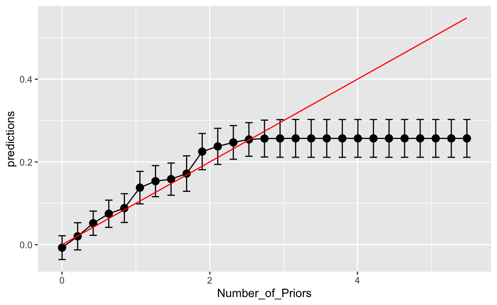

In this tutorial, we imagine a following situation.
Assuming that the most important predictor of criminal behavior is poverty and lack of employment opportunities, the U.S. government mandated a new job counselling and job placement program for ex-offenders. Since the program was costly, the government decided to test its effectiveness by first running an RCT.
Imagine that half of the offenders on the COMPAS list were mandated to go through comprehensive job counselling and help with job placement, while the other half did not have any access to this program. At this moment we are abstracting from the recidivism rates.
I modified the COMPAS data you used in the previous tutorials in the following manner:
Two_yr_Recidivism variablejobhelp dummy variable that indicates whether the individual was assigned to treatment or notwage variable which records the average of the monthly income (in thousand USD) during the three years after the end of the job placement program for both treated and non-treated individuals.Number_of_Priors so that it starts with zero.Both jobhelp and wage variables are simulated.
You are part of the program assessment team and your task is to find the following information about the treatment effect of jobhelp on wage:
In this tutorial we will learn how to answer these questions using the Generalized Random Forest algorithm developed by Susan Athey, Stefan Wager and Julie Tibshirani.
Complete the code below by filling in the blanks
# See the head of the data
____(dataset)
# Get the density plot of the variable 'wage'
dataset %>% ggplot(...) +
# Get the number of people who were treated
dataset %>% # See the head of the data
head(dataset)
# Get the density plot of wages
dataset %>% ggplot(aes(x = wage)) + geom_density() + xlab("Wage (th USD)")
# Get the number of people who were treated
dataset %>% count(jobhelp)Since the assignment to the job placement program was completely random, and there was full compliance (mandatory program for ex-offenders), we can grow a Causal Forest to estimate the treatment effects.
To grow a Causal Forest we will use the causal_forest() function from grf package.
Unfortunately, causal_forest() accepts data only in matrix or vector form, not a data.frame object. Hence, the first step is to create the following objects:
X of predictorsY which contains wage informationW which contains treatment status.Fill in the blanks below, put the correct formula instead of the question mark. Hint: use model.matrix() function automatically convert a dataset into a numeric matrix
Y <- dataset$____
W <- dataset$____
X <- dataset %>% select(-____, -____) %>%
_____.______( ~ ?, data = .)
# Drop the intercept (No need to change anything here)
X <- X[ , -1]Y <- dataset$wage
W <- dataset$jobhelp
X <- dataset %>% select(-wage, -jobhelp) %>%
model.matrix(~., .)
X <- X[ , -1]Now we are ready to grow our first Causal Forest.
Please, grow a causal forest with the following parameters:
clusters = NULL since our treatment was fully randomized, and not randomized within clusterssample.fraction).mtry (you can always try with fewer variables later).min.node.size.honesty.fraction. (Notice that it means that for any given tree we use 25% of initial data either to train or to estimate since we sample only half of data to begin with)honesty.prune.leaves = TRUE in order to trim leaves that end up empty in the estimation sampletune.parameters = "none", since we are skipping cross-validation part for the sake of time. Otherwise, “the following parameters are tunable: (”sample.fraction“,”mtry“,”min.node.size“,”honesty.fraction“,”honesty.prune.leaves“,”alpha“,”imbalance.penalty“)”.compute.oob.predictions=TRUE to save the out-of-bag predictions that can be useful later.Save the resulting forest as cforest.
Fill in the gaps in the formula below
set.seed(234)
cforest <- causal_forest(
X = _,
Y = _,
W = _,
num.trees = ____,
clusters = NULL,
sample.fraction = __,
mtry = ____,
min.node.size = __,
honesty = TRUE,
honesty.fraction = __,
honesty.prune.leaves = TRUE,
tune.parameters = "none"
)
cforestset.seed(234)
cforest <- causal_forest(
X,
Y,
W,
num.trees = 4000,
clusters = NULL,
sample.fraction = 0.5,
mtry = ncol(X),
min.node.size = 10,
honesty = TRUE,
honesty.fraction = 0.5,
honesty.prune.leaves = TRUE,
tune.parameters = "none",
compute.oob.predictions = TRUE
)
cforestWe have successfully trained a Causal Forest and saved it as cforest.
We know that one of the downsides of forests is that we can no longer represent the segmentation graphically as a tree, because a forest combines information from many trees.
Nevertheless, we can still access one of the 4000 causal trees we grew as part of the forest and visualize it.
For example, the code below uses get_tree() function to access the very first causal tree (out of 4000) and plots it. The resulting plot tells you about the splitting rules, the number of observations in each resulting leaf using estimation sample, and the mean outcome “avg_Y” (unfortunately, not the mean treatment effect) and the share of treated “avg_W”.
Change the code below to access the 42nd causal tree
plot(get_tree(cforest, index=1))plot(get_tree(cforest, index=42))Remember that the very first split of a decision tree usually indicates the most important predictor for Y. In the end, the very first split finds the variable that helps the most in minimizing RSS. Similarly, a causal tree first splits at a variable that helps the most to capture differences in treatment effects.
As you can see the split rules changed quite a lot if we compare the very first tree to the 42ns tree. This instability is remedied exactly by bootstrapping our sample 4000 times.
A better way to see the importance of the variable is by checking how often any given variable was used for splitting overall across all 4000 trees.
We can use function variable_importance() to get a simple weighted sum of how many times variable \(i\) was split on at each depth in the forest. Hence, the most important variable for the heterogeneity in treatment effects will have the highest share of splits.
variable_importance(_____)variable_importance(cforest)Finally, let’s calculate some treatment effects.
Function average_treatment_effect() does exactly what we want.
For example, in the exercise code below you can already see the example of how to calculate ATE. Since we are interested in ATE, we indicate that the target sample is “all”.
Change the target sample to “treated” to get the ATT
set.seed(456)
average_treatment_effect(cforest, target.sample = "all") estimate std.err
0.07054115 0.00695629 set.seed(456)
average_treatment_effect(cforest, target.sample = "treated")Well, this is all fancy to calculate the ATE using causal forest. But we also know that the OLS should do a good job, especially since there are no confounders because the assignment to treatment was administered completely at random.
Run an OLS in the code chunk below. Does the estimate of the ATE using OLS coincide with the earlier estimate by the causal forest?lm(wage ~ ., data= dataset)To test how well the causal forest we trained performs relative to a model with no splits (just a constant treatment effect model), we will use test_calibration() function, which runs for us the test, developed by Chernozhukov, Demirer, Duflo, and Fernandez-Val (2017). The test fits a linear model of the target estimand as a function of average treatment effect of the program on wages – the mean GRF prediction – and the differential treatment effect of the program on wages as predicted by the GRF out-of-sample. If the GRF captures no additional variation in treatment effects, then the coefficient in front of the differential prediction will be zero.
test_calibration(_______)test_calibration(cforest)Since the estimated coefficient in front of the differential.forest.prediction term is significantly greater than zero (p-value is much lower than 5%), we can reject the null hypothesis of no heterogeneity in treatment effects. In other words, the causal forest splits the covariate space in such a way that the treatment effect in one group is indeed different from the treatment effect in another group. From the description of the test, “A coefficient of 1 for ‘mean.forest.prediction’ suggests that the mean forest prediction is correct, whereas a coefficient of 1 for ‘differential.forest.prediction’ additionally suggests that the forest has captured heterogeneity in the underlying signal.”
We have both, a coefficient of 1 for the mean.forest.prediction and a coefficient of 1 for the differential.forest.prediction. Hence, not only our causal forest captures heterogeneity in TE, but it also has the mean prediction that is correct. Good sign!
We can also investigate how the ATE changes within different subgroups of ex-offenders.
For example, the code below calculate the Conditional ATE for Caucasian ex-offenders.
Change the code below to calculate ATE for black ex-offenders. Hint: you just need to change one character; remember that we have just two ethnicity groups in the sample: Caucasians and African-Americans
average_treatment_effect(cforest, target.sample = "all", subset = X[ , "ethnicityCaucasian"] == 1) estimate std.err
0.05557013 0.01024260 average_treatment_effect(cforest, target.sample = "all", subset = X[ , "ethnicityCaucasian"] == 0)Remember that the variable_importance() function in the previous section indicated that by far Number_of_Priors was the most important factor explaining the heterogeneity in treatment effects.
Hence, now we want to explore how treatment effects differ at different values of Number_of_Priors. How can we do that?
We can create a new matrix X, where we fix all other variables but we vary only the values of Number_of_Priors.
For example, we can create a matrix, X_test, with all variables set to zero. First, recognize that Number_of_Priors is in fact a discrete variable. In the code below we first capture all the unique values Number_of_Priors has in our dataset and save it as npriors_val. Then we create the matrix with all variables set to zero, except the first variable which corresponds to Number_of_Priors. Here, we substitute it with the grid of values saved in npriors_val. Finally, the code shows you the head of the matrix.
npriors_val <- unique(dataset$Number_of_Priors) %>% sort()
Xtest <- matrix(0, length(npriors_val), ncol(X))
Xtest[,1] <- npriors_val
head(Xtest)Now, since we have constructed our Xtest data where we control for all other predictors but vary the number of priors, we can create personalized estimates of the treatment effects. We use function predict() to get the TE predictions for the hypothetical new observations – each row of the Xtest – using the model saved as cforest. Notice that we also ask to estimate the variance of the TE estimator. Save the prediction as cf_predict dataset.
Finish the code below, substitute blanks
set.seed(3456)
cf_predict <- predict(object = _______,
newdata = ____,
estimate.variance = TRUE) %>%
mutate(Number_of_Priors = Xtest[ ,1])
head(cf_predict)set.seed(3456)
cf_predict <- predict(object = cforest,
newdata = Xtest,
estimate.variance = TRUE) %>%
mutate(Number_of_Priors = Xtest[ ,1])
head(cf_predict)As you can see it creates a dataframe with two variables:
Finally, visualize the estimated heterogeneity in treatment effects due to Number_of_priors. You want a graph which shows how the estimated Treatment Effects (y-axis) vary depending on the number of priors (x-axis). We also want 95% confidence interval. Remember, that we can get the 95% confidence interval by adding or subtracting 1.96*SE of the estimator.
Fill in the blanks in the code below
ggplot(aes(x = ________, y = ______), data = ______) +
geom_errorbar(aes(ymin=predictions - 1.96*sqrt(________),
ymax=predictions + 1.96*sqrt(________)), colour = "black", width=.1) +
geom_line() +
geom_point(size=3)ggplot(aes(x = Number_of_Priors, y = predictions), data = cf_predict) +
geom_errorbar(aes(ymin=predictions - 1.96*sqrt(variance.estimates),
ymax=predictions + 1.96*sqrt(variance.estimates)), colour = "black", width=.1) +
geom_line() +
geom_point(size=3)To see whether indeed we have too few observations in the right tail of the distribution of Number_of_Priors, we can plot the distribution:
dataset %>% ggplot(aes(x = Number_of_Priors)) + geom_density()Indeed, the graph shows that we have too few observations for the values greater than 1.5. So we actually cannot know for sure whether the flattening is caused by true change in the relationship between treatment effects and the number of priors, or due to insufficient data in that region.
Wait, actually we can. Well, not in reality, not when you work with real data. But this time, I simulated the data, I know the true treatment effects.
The true formula for treatment effects was te = 0.1*Number_of_Priors. Hence, let’s plot everything again with the true values.
cf_predict_withtruth <- cf_predict %>%
mutate(true_effect = 0.1*Xtest[ ,1])
ggplot(aes(x = Number_of_Priors, y = predictions), data = cf_predict) +
geom_errorbar(aes(ymin=predictions - 1.96*sqrt(variance.estimates),
ymax=predictions + 1.96*sqrt(variance.estimates)), colour = "black", width=.1) +
geom_line() +
geom_point(size = 3) +
geom_line(aes(x = Number_of_Priors, y = true_effect ), data = cf_predict_withtruth, color = "red")
Now you can clearly see that the Causal Forest did not have enough data to split on Number_of_Priors for values beyond 1.5. So it lumped together those values and estimated the average treatment effect for a group of offenders with number of priors greater than 1.5-2.0.
However, this is how Causal Forest works for extreme values. In fact, it did a pretty good job for more frequent groups of offenders with the number of priors in the range of 0 to 1.5.
Now, since you know that I created the heterogeneous treatment effects using only Number_of_Priors as a mediator, take a second to appreciate that the Causal Forest indeed did find that Number_of_Priors is the most (and by far only) important factor capturing the heterogeneity in treatment effects.
You did not have to write a single line of sophisticated formula in a regression to uncover. All you had to do is to pass X, Y, and W objects to causal_forest() function. That’s what makes this tool amazing. Now the search for heterogeneity in treatment effects is truly data-driven.
Now, creating an artificial Xtest matrix and varying only one variable at a time may help you uncover the extent of heterogeneity across different dimensions at an analytical level.
However, you still need to deliver guidance to the government, right?
You can use the results of the causal forest that creates prediction of the TE for every new ex-offender, compares the expected TE to the marginal cost of the job assistance program, and then it delivers personalized recommendations of treatment eligibility (yes/no) for that particular ex-offender.
Alternatively, you can try to grow just one causal tree and use the segmentation delivered by that tree to tell policymakers which groups are eligible and which are not. However, as we saw that using just one tree might be a bad idea since individual trees might be unstable (non-robust). In this case, you need to use cross-validation for every single free parameter in order to prune the tree in a correct manner. In general, you can then see how worse your single Causal Tree performs with respect to the Causal Forest. If the performance is comparable, then you may use a single Causal Tree to inform policymakers, as this approach is much more transparent.
In either case, be prepared to be attacked on the fairness grounds. You would need to check in advance that your policy prescriptions would be seen as fair. Also, you need to defend:
What if the uptake of the job training program was not so random? What if there were non-compliers: some ex-offenders decided to be in the program even if they were not initially assigned to the treatment group, while some of the ex-offenders opted out of the program even if they were assigned to the treatment group.
We know that this may complicate our estimation problem. However, you strongly believe that the reasons for non-compliance are mostly explained by the characteristics you have in the data, in particular, by the ethnicity of the ex-offenders.
I created a separate dataset called dataset2 which contains the same kind of data as in dataset, but where jobhelp variable is no longer assigned at random.
To check whether treatment jobhelp correlates with any of the other variables in the dataset, we can simply run a linear model regressing jobhelp on other variables (except wage) and looking at the F-statistics for joint significance of all regressors.
lm(jobhelp ~ .-wage, data =dataset2) %>% summary()
Call:
lm(formula = jobhelp ~ . - wage, data = dataset2)
Residuals:
Min 1Q Median 3Q Max
-0.7933 -0.5113 0.2876 0.4320 0.6466
Coefficients:
Estimate Std. Error t value Pr(>|t|)
(Intercept) 0.53099 0.03262 16.276 < 2e-16 ***
Number_of_Priors -0.03116 0.01663 -1.874 0.0612 .
Age_Above_FourtyFiveyes -0.03312 0.03886 -0.852 0.3943
Age_Below_TwentyFiveyes 0.01599 0.04101 0.390 0.6966
FemaleFemale 0.08235 0.03872 2.127 0.0337 *
Misdemeanoryes -0.02566 0.03289 -0.780 0.4355
ethnicityCaucasian 0.17999 0.03269 5.507 4.66e-08 ***
---
Signif. codes: 0 '***' 0.001 '**' 0.01 '*' 0.05 '.' 0.1 ' ' 1
Residual standard error: 0.482 on 993 degrees of freedom
Multiple R-squared: 0.04778, Adjusted R-squared: 0.04203
F-statistic: 8.304 on 6 and 993 DF, p-value: 8.505e-09Indeed, these six regressors are jointly significant in explaining assignment to treatment jobhelp, since p-value of the F-test is much below the 5% threshold.
Remember that we have already established that the true average treatment effect of the program is 71 USD (\(\pm\) 7 USD standard error). This remains the true average treatment effect even if we there is a change in the assignment to treatment. However, would we be able to get the correct estimate of the ATE by using a simple OLS?
lm(wage ~ jobhelp + ., data = dataset2) %>% tidy()Apparently, no. The estimate of the ATE using the OLS regression is at 93 USD (\(\pm\) 9 USD standard error).
Now what happens if we run a causal forest?
Fill in blanks below. Run a causal forest but now tune all tunable parameters (i.e., tune="all").
X2 <- dataset2 %>%
X2 <- X2[ , -1] # remove the intercept
set.seed(234)
cforest2 <- causal_forest(
X = X2,
Y = ____________,
W = ____________,
num.trees = ____,
clusters = ____,
sample.fraction = __,
honesty = _____,
tune.parameters =
)
cforest2
average_treatment_effect(cforest2, target.sample = "all")X2 <- dataset2 %>% select(-wage, -jobhelp) %>% model.matrix( ~., data =.)
X2 <- X2[ , -1]
set.seed(234)
cforest2 <- causal_forest(
X = X2,
Y = dataset2$wage,
W = dataset2$jobhelp,
num.trees = 4000,
clusters = NULL,
sample.fraction = 0.5,
honesty = TRUE,
tune.parameters = "all"
)
cforest2
average_treatment_effect(cforest2, target.sample = "all")We learned last week how Double Machine Learning can help us with partialling out the effects of confounders. In fact, causal_forest() implements DML under the hood: it always fits two regression forests, for Y and W, and uses the out-of-bag prediction errors to fit the causal forest.
Let’s do these prediction steps by hand to see how you can actually supply the predictions in the causal_forest() formula. Knowing this allows you to use other prediction models (e.g., lasso), if you want, instead of the regression trees.
Fill in the blanks in the code below. We will use a regression_forest() function that comes from the grf package. Please, tune all tunable parameters.
set.seed(456)
# Fit a regression model to predict treatment variable 'jobhelp'
forest.W <- regression_forest(X = __, Y = _____________, tune.parameters = "___")
# Get out-of-bag predictions for 'jobhelp'
W_hat <- predict(_________)$predictions
# Fit a regression model to predict outcome variable 'wage'
forest.Y <- regression_forest(X = __, Y = _____________, tune.parameters = "___")
# Get out-of-bag predictions for 'wage'
Y_hat <-
# Fit a causal forest, but supply the predictions for Y and W which you have found earlier: Y.hat and W.hat
cforest3 <- causal_forest(
X = __,
Y = _______________,
W = _______________,
Y.hat = ___,
W.hat = ___,
num.trees = 4000,
clusters = NULL,
sample.fraction = 0.5,
honesty = TRUE,
tune.parameters = "___"
)
# Estimate the average treatment effect
average_treatment_effect(___________, target.sample = "___")set.seed(456)
# Fit a regression model to predict treatment variable 'jobhelp'
forest.W <- regression_forest(X = X2, Y = dataset2$jobhelp, tune.parameters = "all")
# Get out-of-bag predictions for 'jobhelp'
W_hat <- predict(forest.W)$predictions
# Fit a regression model to predict outcome variable 'wage'
forest.Y <- regression_forest(X = X2, Y = dataset2$wage, tune.parameters = "all")
# Get out-of-bag predictions for 'wage'
Y_hat <- predict(forest.Y)$predictions
# Fit a causal forest, but supply the predictions for Y and W which you have found earlier: Y.hat and W.hat
cforest3 <- causal_forest(
X = X2,
Y = dataset2$wage,
W = dataset2$jobhelp,
Y.hat = Y_hat,
W.hat = W_hat,
num.trees = 4000,
clusters = NULL,
sample.fraction = 0.5,
honesty = TRUE,
tune.parameters = "all"
)
# Estimate the average treatment effect
average_treatment_effect(cforest3, target.sample = "all")If you have time, try to use Lasso as a prediction model for Y or W or both. Do not forget to include interaction terms.
Now suppose that the participation in the program was actually driven a lot by the employment status of the participants which they had before committing the offense. For example, those who had a stable job before the arrest were more likely to participate in the program. But these people were also more likely to earn higher salaries anyways. Unfortunately, the dataset does not record the pre-arrest employment status. In this case, you are facing positive selection based on unobservable characteristics.
Do you think the GRF procedure would perform well in this circumstance?
Let’s again simulate a new assignment to treatment but this time it also should depend on unobservable characteristics.
The code below shows the GRF’s estimate of the ATE in such situation.
set.seed(456)
X3 <- dataset3 %>% select(-wage, -jobhelp) %>% model.matrix( ~., data =.)
X3 <- X3[ , -1]
# Fit a causal forest, but supply the predictions for Y and W which you have found earlier: Y.hat and W.hat
cforest_nonobservable <- causal_forest(
X = X3,
Y = dataset3$wage,
W = dataset3$jobhelp,
num.trees = 4000,
tune.parameters = "all"
)
# Estimate the average treatment effect
average_treatment_effect(cforest_nonobservable, target.sample = "all") estimate std.err
0.11644844 0.00793196 As you can see, the estimate of the ATE in this case significantly overestimates the true ATE of the program.